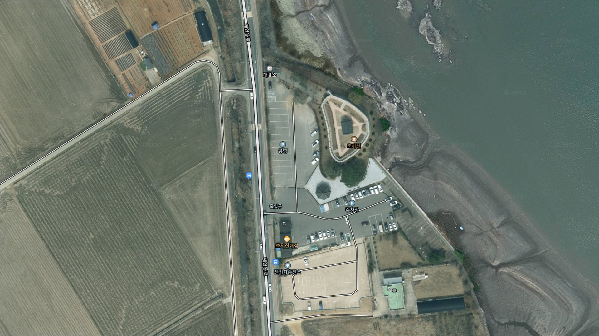
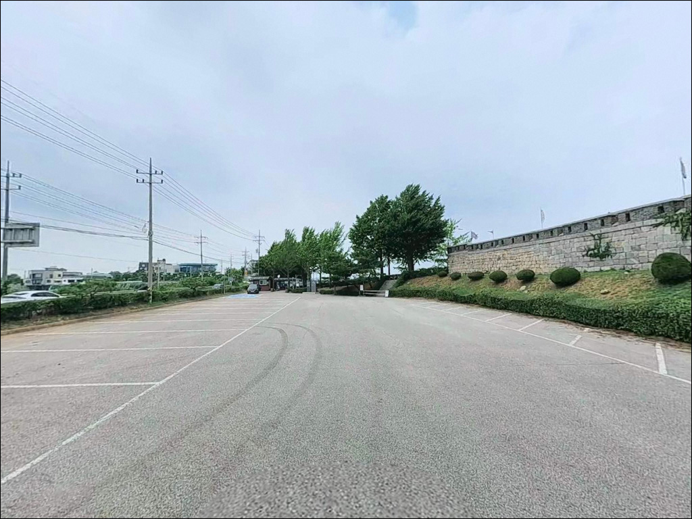
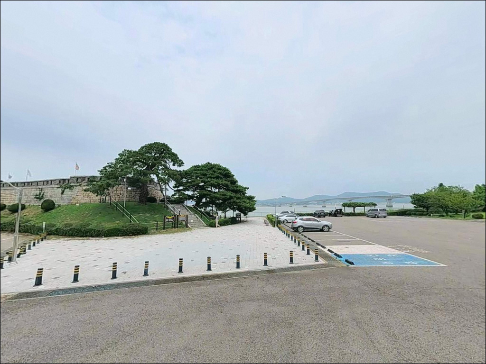
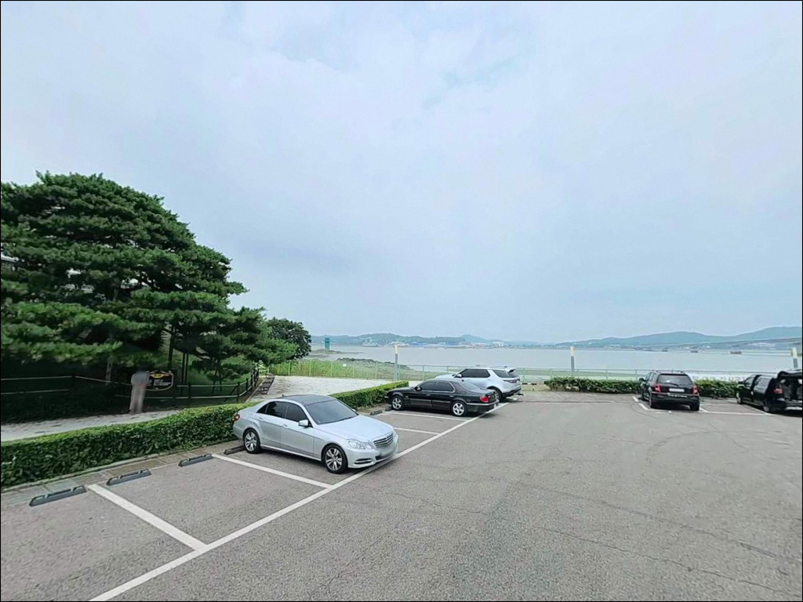
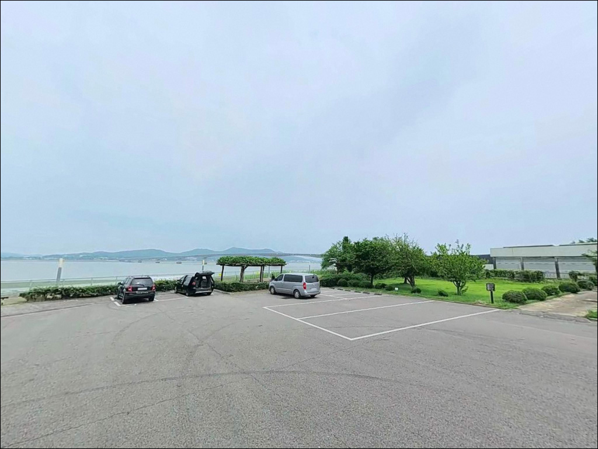
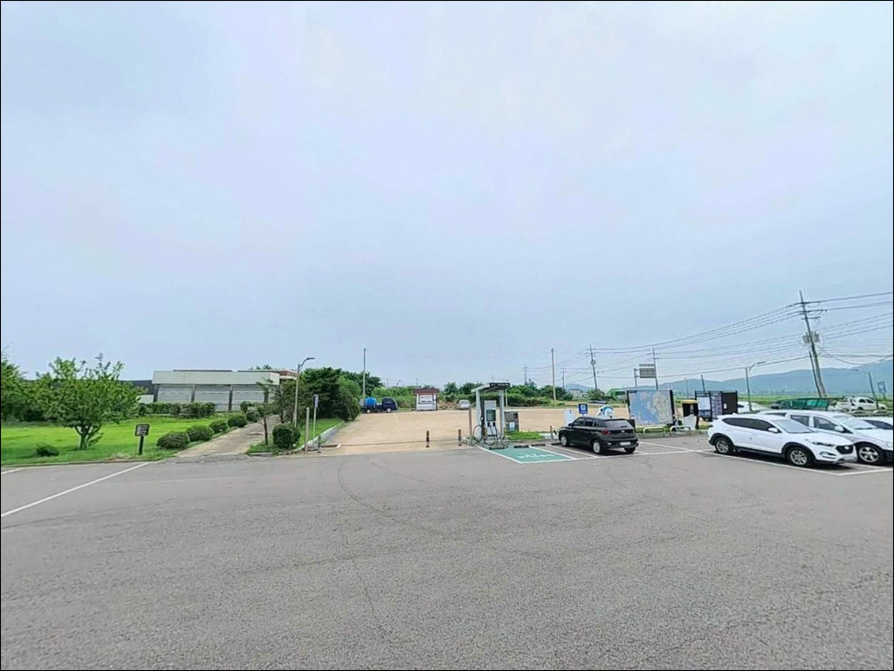
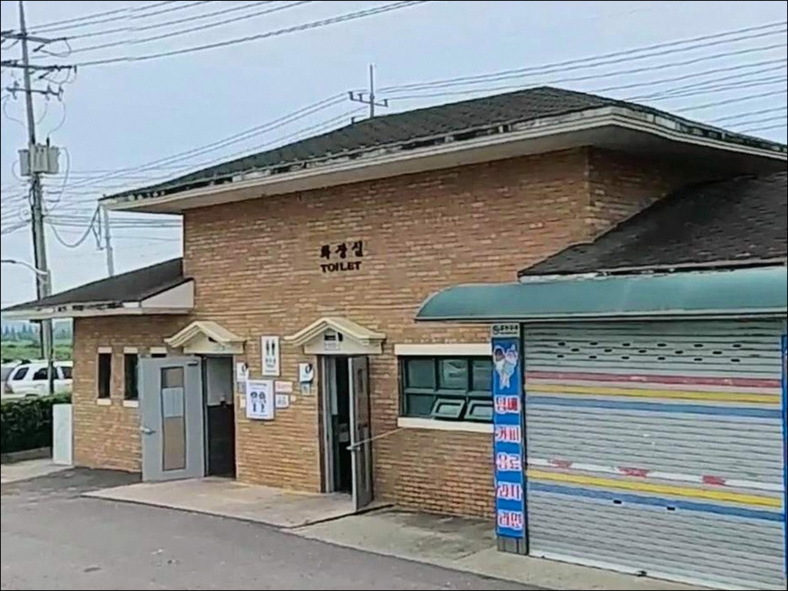
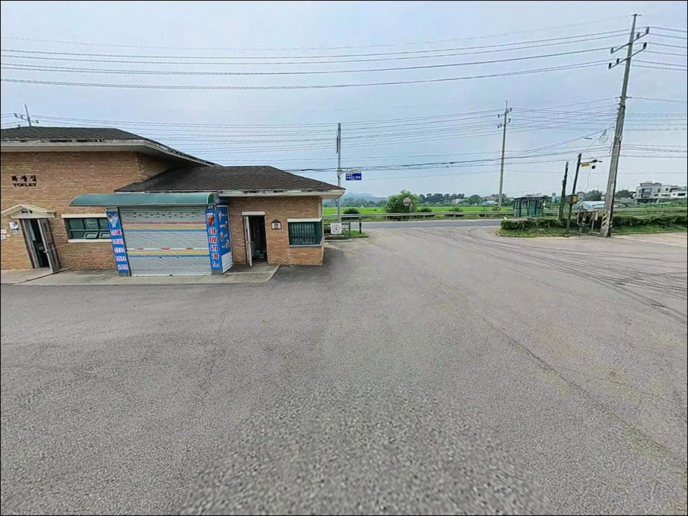
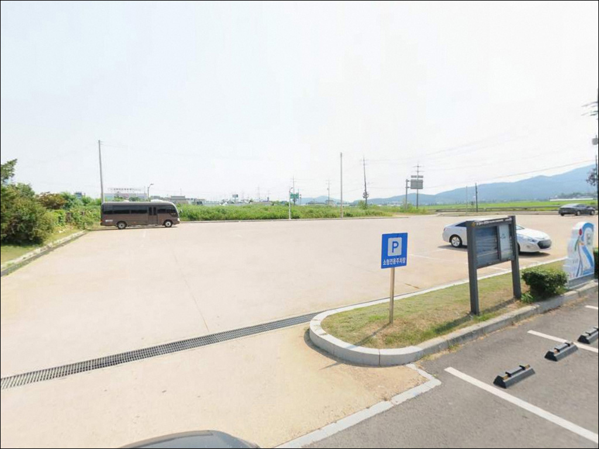

초지진 공영주차장, 강화도 인천 강화군 자연의 여백을 느낄 수 있는 차박, 낚시 명소
이 페이지에는 광고(제휴 링크 포함)가 있으며, 광고 링크를 통해 구매하면 운영자가 판매 수익 또는 수수료를 받을 수 있습니다. 포인트 사진: 카카오맵 스카이뷰·로드뷰. 이 페이지의 지도·사진 이미지는 카카오맵의 실제 서비스 이미지와 다를 수 있습니다.


포인트 안내
초지진 공영주차장
인천 강화군 길상면 초지리 1251-308
강화해협 조류를 모르고 들어서면
아무 채비를 써도 바닥을 제대로 잡지 못합니다.
초지진 앞 해안 석축과 초지항 선착장은
서해 특유의 강한 조류가 직접 지나는 구간으로,
물때와 입장 타이밍이 낚시 성패의 첫 번째 조건입니다.
인천 강화군 길상면 초지리,
초지대교를 건너 강화도 남단에 자리한
초지진 공영주차장은
대형차 40대 수용 규모의
포장 정비된 공영주차장을 기반으로 합니다.
주차장 바로 앞 해안 석축과
반경 200~500m 안의 초지항 선착장을
함께 활용할 수 있는 복합 구조 포인트입니다.
이 글은 초지진 공영주차장을 기점으로 한
진입 동선, 야간 체류 환경, 낚시 지형 분석,
스타일별 공략 조건에 집중합니다.
조황 단정이나 특정 어종 보장은
이 글의 범위에 포함되지 않습니다.

1. 진입 동선과 포인트 접근성
초지대교를 건너면 강화도 쪽 교량 진입로에서
해안동로 방향으로 바로 이어집니다.
초지진 공영주차장은 그 해안동로 위에 자리해
도로변 직접 진입이 가능한 구조입니다.
왕복 2차선 포장 도로이고
주차장 전면이 관광지 접근용으로 정비되어 있어
대형 SUV나 미니밴 기준으로도 진입에 큰 어려움은 없는 편입니다.
주차 규모는 대형차 포함 40대 수용이 가능한 수준으로
강화군 공식 관광 안내에서 확정된 정보입니다.
주차장이 넓어 회차 공간도 충분하고,
진입과 출차 방향 모두 부담 없는 구조입니다.
주차 요금은 무료로 안내되고 있습니다.
초지항 선착장은 주차장 기준
반경 200~500m 거리로 추정됩니다.
해안동로를 따라 걸어서 이동하는 방식이 자연스러우며,
석축 구간도 주차장 앞에서부터
일정 구간 접근 가능한 발판이 있는 편입니다.

2. 차박 환경 및 야간 체류 여건
초지진 공영주차장은 포장 상태가 좋고 평탄한 편이라
차박 베이스캠프로 활용하기에
물리적 조건은 무난한 수준입니다.
대형 주차장 구조 특성상
차량 수평 잡기에 유리한 편이며,
혼자 또는 소수 인원 기준으로
자리 선택의 여지도 있습니다.
다만 초지진은 관광지이기 때문에
낮 시간대에는 방문객 차량 통행이 있습니다.
야간에는 비교적 한산해지는 편으로 추정되지만,
주차장 야간 개방 여부는
출발 전 현장 확인이 필요한 부분입니다.
관람시간(하절기 18:00, 동절기 17:00) 종료 후
주차장 폐쇄 여부가 명확히 확정되지 않았으므로,
강화군청이나 현장 안내판을 사전에 확인하는 편이 낫습니다.
관광지 전면 위치 특성상
완전한 외진 분위기를 기대하기는 어렵습니다.
조용히 낚시를 마치고 짧게 체류하는 용도로는
나쁘지 않은 환경이지만,
차박 자체를 메인 목적으로 삼는다면
동막해변 공영주차장이나 선수항 주차장이 대안이 될 수 있습니다.


3. 주변 편의시설 및 인프라 현황
초지진 공영주차장에는 화장실, 매점, 휴식공간이
강화군 공식 관광 안내 기준으로 확인됩니다.
낚시 출조 전후 기본 편의는 주차장 안에서
대부분 해결할 수 있는 구조입니다.
식수와 간식은 주차장 매점을 우선 활용할 수 있으며,
완전 자급보다는 한 단계 가벼운 준비로도
진입이 가능한 포인트입니다.
반경 3km 이내 초지대교 방향 국도변에
편의점과 주유소가 있을 가능성이 있습니다.
단 야간 운영 여부는 출발 전에
지도 앱으로 직접 확인하는 편이 확실합니다.
초지항 인근에는 횟집이 일부 있는 것으로
알려져 있어, 이른 저녁 식사 동선으로
활용해볼 수 있습니다.

4. 방문 전 준비사항 및 체크 포인트
강화해협은 서해에서도 조류가 빠른 편으로 알려진 구역입니다.
원투낚시든 루어낚시든
물때를 먼저 확인하지 않으면
채비가 너무 빨리 흘러
제대로 된 운용이 어려워지는 상황이 생깁니다.
바다타임 기준 초지리 또는 강화 물때표를 출발 전 확인하고,
조류가 약해지는 시간대에 맞춰 입장하는 것이 기본입니다.
서해 갯벌 지형 특성상 간조 시에는
갯벌이 넓게 드러나 발판이 좁아질 수 있습니다.
석축 구간은 조류가 들어오면 발판 높이가
빠르게 바뀌는 경우가 있으므로
구명조끼 착용은 필수입니다.
야간 입장 시에는 석축과 선착장 발판이 미끄러운 편이라
헤드랜턴을 반드시 챙겨야 합니다.
초지진이 관광지이자 역사 사적지이므로,
주차장 이용 시 다른 방문객과 지역민에게
불편을 주지 않는 자리 선택이 기본 매너입니다.
낚시 쓰레기는 전량 되가져가야 하며,
강화해협은 군사보호구역 경계와 인접한 구간이 있을 수 있으므로
접근 방향에 무리한 이동을 하지 않는 것이 좋습니다.

5. 지형 기반 낚시 여건 분석
초지진 앞 해안은 강화해협(염하강)을 직접 마주하는 구조입니다.
해협은 내륙 수로처럼 좁은 지형이 조류를 집중시키는 방식으로,
수심과 유속이 조석에 따라 빠르게 변하는 서해 수로형 환경에 해당합니다.
조류 흐름이 살아있는 구간에서 회유성 어종이 지나는 길목이 되기 쉬운 구조이며,
그 점이 이 포인트를 서해 낚시 입문 장소로 자주 거론하게 만드는 이유입니다.
바닥은 뻘과 모래가 섞인 구조로 추정됩니다.
선착장 끝단 방향은 수심이 일정 수준 확보될 가능성이 있고,
석축 아래 경계면은 루어를 느리게 탐색하기에
구조적으로 맞는 편입니다.
다만 사리 전후에는 채비가 너무 빨리 흘러 바닥 탐색이 어려운 조건이 되므로,
조금 전후나 정조 타이밍을 기준으로 입장 시각을 잡는 것이 기본 판단 기준입니다.
외항 쪽 조류가 강할 때는 내항 방향이나
선착장 안쪽의 조류 완충 구간을 대안으로 활용할 수 있습니다.
초지항 선착장 구조가 내·외항으로 나뉘어 있다면
내항 쪽은 조류 영향을 덜 받아
찌낚시나 가벼운 생활낚시에 더 맞는 환경이 될 수 있습니다.
최신 조황은 가기 전에 꼭 검색해 보시기 바랍니다.


6. 강화해협 지형에 맞는 낚시 스타일
이 포인트에서 가장 자연스러운 선택은 원투낚시입니다.
강화해협의 뻘·모래 바닥 구조와
조류 흐름이 원투 스타일에 맞는 조건을 만들어냅니다.
봉돌을 다소 무겁게 세팅해
조류에 채비가 밀리는 것을 잡아주는 방식이 이 포인트에 어울립니다.
가을부터 초겨울 사이 망둥어 시즌에는
강화도권 해안 포인트들이 전반적으로 활발해지는 패턴이 있습니다.
루어낚시도 기대해 볼 수 있습니다.
강화해협을 타고 회유하는 농어는
수도권 낚시인들 사이에 알려진 패턴이며,
야간 석축 구간과 선착장 끝단이
루어 포지션으로 활용 가능한 자리입니다.
봄부터 여름 사이 광어 루어 다운샷도 시도해볼 만한 스타일이고,
봄~여름 숭어 시즌에는 찌나 가벼운 루어 채비로
선착장 주변을 노리는 방식도 맞습니다.
선착장 내항 쪽은 조류 완충이 되는 구간으로,
가족 단위나 생활낚시 목적으로 찾는 경우라면
가벼운 찌낚시나 카드 채비로
잡어 손맛을 즐기는 방식도 이 구조에 맞습니다.
붕장어 야간 원투도 이 구역 패턴에서 빠지지 않는 스타일로,
야간 입장 시 봉돌 무게만 잘 잡아주면 시도해볼 수 있습니다.

7. 대안 포인트와 플랜 B 동선
초지진 주차장이 혼잡하거나
낚시 조건이 기대에 못 미칠 때
가장 먼저 이동할 수 있는 대안은
초지리 해안선을 따라 황산도 해변 방향입니다.
주차장에서 1~2km 거리로
강화 낚시 지도에 포인트로 기재된 구간이며,
같은 해협 패턴에서 분위기를 바꿔볼 수 있습니다.
북쪽으로 5km 안팎 거리의 광성보 해안선은
장어마을 일대 석축 구간이 있고
주차와 낚시 접근 편의가 잡혀 있는 포인트로 알려져 있습니다.
완전히 다른 패턴을 원한다면
강화도 남단 방향의 선두리 방파제가 광어 루어 포인트로
알려진 곳이며, 조류 안정도가 다른 편이라
비교 출조 동선으로 고려해볼 수 있습니다.
차박 장소를 바꿔야 할 때는
동막해변 공영주차장이나 선수항 주차장이
현실적인 대안입니다.
동막해변은 일몰 방향이 트이는 환경이고,
선수항은 낚시 접근과 주차를
동시에 잡을 수 있는 강화도 대표 생활낚시 거점입니다.

조류를 이해하면 초지진이
다른 포인트로 보입니다
수도권에서 한 시간 안팎 거리에
서해 조류와 갯벌 낚시를 동시에 경험할 수 있는 포인트는
그렇게 많지 않습니다.
초지진 공영주차장은 접근성, 주차 편의, 편의시설 면에서
진입 부담이 가장 낮은 편에 속하며,
원투낚시부터 루어, 붕장어 야간낚시까지
다양한 스타일로 공략이 가능한 구조입니다.
반면 강화해협의 조류 세기를 미리 파악하지 않으면
채비를 아무리 잘 준비해도
운용 자체가 안 되는 상황을 맞닥뜨릴 수 있습니다.
물때 확인, 봉돌 무게 세팅, 야간 안전 장비,
이 세 가지를 챙기고 간다면
서해 조류낚시의 손맛을 제대로 즐길 수 있는 곳입니다.
화장실과 매점이 주차장에 있어
차박 베이스로도 부담이 적은 편이며,
낚시를 마치고 강화해협 야경을 곁에 두고
하룻밤 머무는 여정을 계획하는 분께도
잘 맞는 포인트입니다.